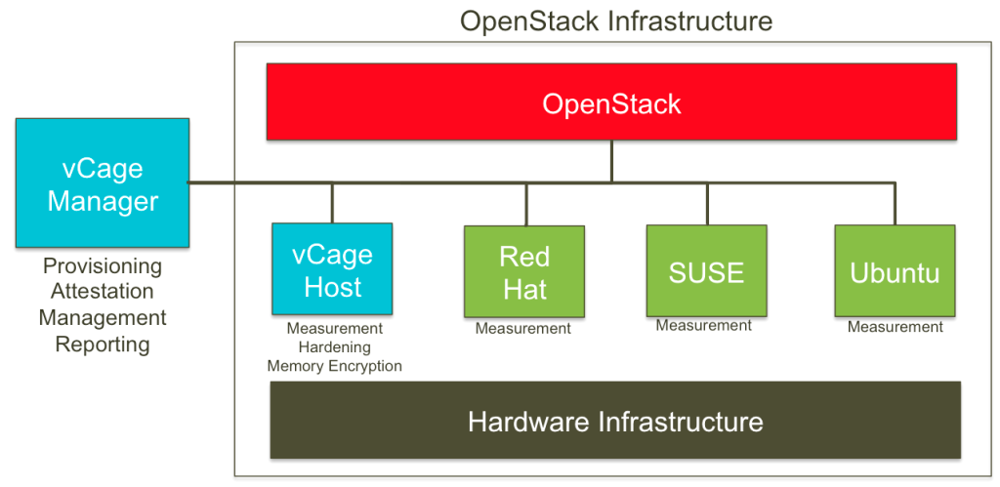

Trustworthy Computing for OpenStack with vCage
PrivateCore vCage secures OpenStack servers in untrusted environments from persistent malware, malicious hardware devices, and insider threats. Private and public clouds can contain thousands of compute nodes spread across geographic boundaries and in remote locations. Compromising one compute node can jeopardize the security of the entire compute infrastructure. PrivateCore vCage protects that infrastructure from persistent threats, securing servers for sensitive applications on OpenStack infrastructure.
Benefits
{kind=link}
- Validates server integrity and counters advanced persistent threats (APTs) like rootkits and bootkits that can bypass traditional anti-virus software
- Secures the IT supply chain against malicious server hardware
- Prevents unauthorized physical access to data in use
- Increases visibility and control over server infrastructure
Technology Snapshot
PrivateCore vCage technology provides a secure foundation for OpenStack computing by protecting servers and the virtual machines running on those servers. vCage software attests the integrity of the servers, hardens the environment to minimize the attack surface, and secures data-in-use (memory) with encryption.

The Risk: Persistent Malware and IT Supply Chain Compromise
Using OpenStack for cloud computing poses many security questions. How can you validate that servers are in a known, good state and not infected with advanced persistent threats (APTs) or compromised with malicious hardware? When handling sensitive workloads in a fluid pool of compute nodes, how can avoid having a compromised server infect other servers? How can you provide an audit trail to demonstrate to compliance auditors and customers that workloads run in trusted environments? With the scalability and speed of cloud computing comes the risk that servers which provide the compute foundation might be compromised